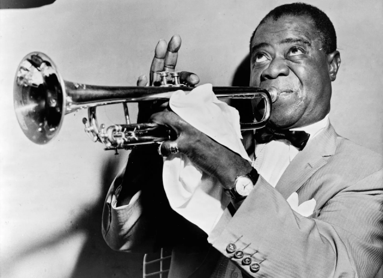

Louis Armstrong, (born August 4, 1901, New Orleans, Louisiana, U.S.—died July 6, 1971, New York, New York), the leading trumpeter and one of the most influential artists in jazz history.
"I was only seven years old but I could easily see the ungodly treatment that the white folks were handing the poor Jewish family whom I worked for."
Although Armstrong claimed to be born in 1900, various documents, notably a baptismal record, indicate that 1901 was his birth year. He grew up in dire poverty in New Orleans, Louisiana, when jazz was very young.
As a child he worked at odd jobs and sang in a boys’ quartet. In 1913 he was sent to the Colored Waifs Home as a juvenile delinquent. There he learned to play cornet in the home’s band, and playing music quickly became a passion; in his teens he learned music by listening to the pioneer jazz artists of the day, including the leading New Orleans cornetist, King Oliver. Armstrong advanced rapidly: he played in marching and jazz bands, becoming skillful enough to replace Oliver in the important Kid Ory band about 1918, and in the early 1920s he played in Mississippi riverboat dance bands.
During this time, Armstrong lived with his mother and sister and worked for the Karnoffskys,[14] a family of Lithuanian Jews, at their home. He would help their two sons, Morris and Alex, collect "rags and bones" and deliver coal. In 1969, while recovering from heart and kidney problems at Beth Israel Hospital in New York City, Armstrong wrote a memoir called Louis Armstrong + the Jewish Family in New Orleans, LA., the year of 1907, describing his time working for the Karnoffsky family. Armstrong writes about singing "Russian Lullaby" with the Karnoffsky family when their baby son David was put to bed, and credits the family with teaching him to sing "from the heart."[15] Curiously, Armstrong quotes lyrics for it that appear to be the same as the "Russian Lullaby", copyrighted by Irving Berlin in 1927, about twenty years after Armstrong remembered singing it as a child.[16] Gary Zucker, Armstrong's doctor at Beth Israel hospital in 1969, shared Berlin's song lyrics with him, and Armstrong quoted them in the memoir.[15] This inaccuracy may simply be because he wrote the memoir over 60 years after the events described. Regardless, the Karnoffskys treated Armstrong extremely well. Knowing he lived without a father, they fed and nurtured him.
"Armstrong is to music what Einstein is to physics and the Wright Brothers are to travel." -Jazz documentary producer Ken Burns
In his memoir, Louis Armstrong + the Jewish Family in New Orleans, La., the Year of 1907, he described his discovery that this family was also subject to discrimination by "other white folks" who felt that they were better than Jews: "I was only seven years old but I could easily see the ungodly treatment that the white folks were handing the poor Jewish family whom I worked for." He wrote about what he learned from them: "how to live—real life and determination." His first musical performance may have been at the side of the Karnoffskys' junk wagon. To distinguish them from other hawkers, he tried playing a tin horn to attract customers. Morris Karnoffsky gave Armstrong an advance toward the purchase of a cornet from a pawn shop. Later as an adult, Armstrong wore a Star of David given to him by his Jewish manager, Joe Glaser, until the end of his life, in part in memory of this family who had raised him